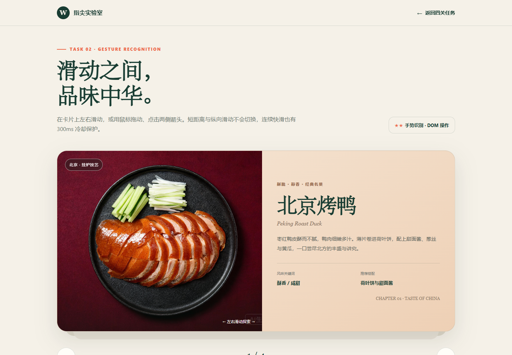
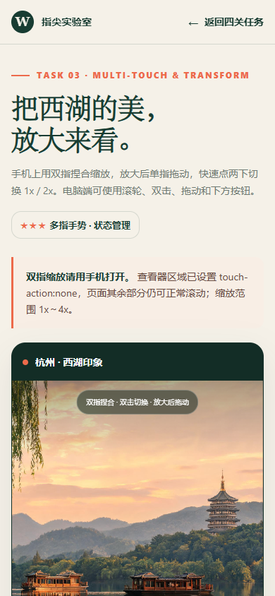

Four Progressive Tasks
四关，把触摸讲明白
每关都能独立打开。手机使用真实触摸，电脑也可通过鼠标、按钮或滚轮完整体验。
Practice Notes
不只做得出，
还要讲得清。
这里记录实现中的关键坑、解决办法与 AI 提示词，便于复查和现场答辩。
一个真实的坑：双指缩放时只更新 scale，图片会向默认变换原点偏移。解决方法是手势开始时记录“中点下的图片坐标”，每帧用新中点反推 translate，并在每次触摸状态变化时重置基准。
为什么 touchend 要使用 changedTouches[0]？
抬手时，这根手指已经从 touches 中移除；changedTouches 保存本次发生变化的触点，所以能可靠取得终点坐标，也不会误读仍留在屏幕上的其他手指。
为什么滑动阈值取 40px，而不是 5px？
手指按下后自然会发生微小抖动。5px 容易把点击误判成滑动；40px 能过滤误触，同时不需要用户滑得过远。再比较横向与纵向位移的绝对值，可避免斜滑误判。
touch-action 为什么不能直接加在 body？
touch-action:none 会完全禁止浏览器原生平移与缩放手势。只应在需要接管手势的区域使用：探针和查看器用 none；横向卡片用 pan-y，保留页面纵向滚动。
没有加速度传感器时，代码如何降级？
先检测 DeviceMotionEvent，再在限定时间内检查是否真的收到有效数据。不支持、无数据或权限被拒绝时均显示明确提示，并保留“点我抽一次”按钮，保证页面不会空白或报错。
本次使用的 AI 提示词记录
“依据移动端触摸事件课程要求，用原生 HTML、CSS、JavaScript 完整实现四个任务；统一 wy_ 命名；所有图片本地化；同时支持真实手机触摸与桌面鼠标操作。”
“双指缩放必须以两指中点为锚点，限制 1x—4x，支持双击、单指拖动、边界约束和横竖屏状态保留，请说明不跳图的数学关系。”
“检查 40px 阈值、300ms 冷却、传感器 18 阈值与 1.5 秒冷却、iOS 权限申请和无数据降级，修复移动端控制台错误。”
Verified Screenshots
真实运行截图
由本地浏览器在桌面与手机设备模式下实际运行生成。


Task Videos
真机演示视频
手机实机录屏，可直接在页面内播放。